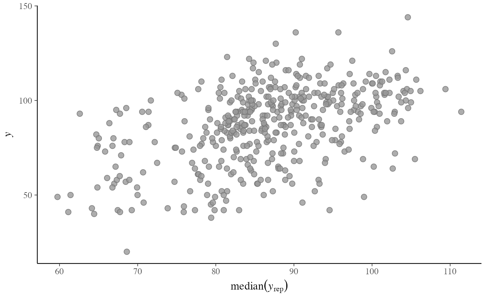

Scatterplots of the observed data y vs. simulated/replicated data
yrep from the posterior predictive distribution. See the
Plot Descriptions and Details sections, below.
ppc_scatter( y, yrep, ..., facet_args = list(), size = 2.5, alpha = 0.8, ref_line = TRUE ) ppc_scatter_avg(y, yrep, ..., size = 2.5, alpha = 0.8, ref_line = TRUE) ppc_scatter_avg_grouped( y, yrep, group, ..., facet_args = list(), size = 2.5, alpha = 0.8, ref_line = TRUE ) ppc_scatter_data(y, yrep) ppc_scatter_avg_data(y, yrep, group = NULL)
Arguments
| y | A vector of observations. See Details. |
|---|---|
| yrep | An |
| ... | Currently unused. |
| facet_args | A named list of arguments (other than |
| size, alpha | Arguments passed to |
| ref_line | If |
| group | A grouping variable of the same length as |
Value
The plotting functions return a ggplot object that can be further
customized using the ggplot2 package. The functions with suffix
_data() return the data that would have been drawn by the plotting
function.
Details
For Binomial data, the plots may be more useful if the input contains the "success" proportions (not discrete "success" or "failure" counts).
Plot Descriptions
ppc_scatter()For each dataset (row) in
yrepa scatterplot is generated showingyagainst that row ofyrep. For this plotyrepshould only contain a small number of rows.ppc_scatter_avg()A single scatterplot of
yagainst the average values ofyrep, i.e., the points(x,y) = (mean(yrep[, n]), y[n]), where eachyrep[, n]is a vector of length equal to the number of posterior draws. Unlike forppc_scatter(), forppc_scatter_avg()yrepshould contain many draws (rows).ppc_scatter_avg_grouped()The same as
ppc_scatter_avg(), but a separate plot is generated for each level of a grouping variable.
References
Gelman, A., Carlin, J. B., Stern, H. S., Dunson, D. B., Vehtari, A., and Rubin, D. B. (2013). Bayesian Data Analysis. Chapman & Hall/CRC Press, London, third edition. (Ch. 6)
See also
Other PPCs:
PPC-censoring,
PPC-discrete,
PPC-distributions,
PPC-errors,
PPC-intervals,
PPC-loo,
PPC-overview,
PPC-test-statistics
Examples
# don't draw line x=y ppc_scatter_avg(y, yrep, ref_line = FALSE)p2 <- ppc_scatter(y, yrep[20:23, ], alpha = 0.5, size = 1.5) p2p2 + lims#> Warning: Removed 1 rows containing missing values (geom_point).# for ppc_scatter_avg_grouped the default is to allow the facets # to have different x and y axes group <- example_group_data() ppc_scatter_avg_grouped(y, yrep, group)# let x-axis vary but force y-axis to be the same ppc_scatter_avg_grouped(y, yrep, group, facet_args = list(scales = "free_x"))